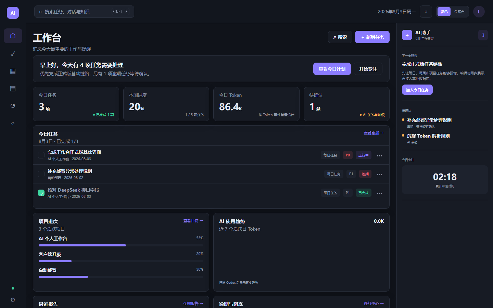

我做了什么
从 Codex 与 Git 中还原每日、每周的项目成果。
自动整理本机 Codex 普通与归档对话、Git 提交、任务和测试，生成按项目归类的日/周报告、日历、Token 分析与可复用知识。

核心只回答三件事
从 Codex 与 Git 中还原每日、每周的项目成果。
每日、每周、项目任务统一计划，AI 建议确认后再进入待办。
自动提炼实现方案、操作步骤、参考文件与注意事项。
没有绩效评分和复杂审批流，所有模块都围绕个人复盘、继续开发和复用经验。
普通和归档会话统一分析，按天、周、项目展示完成的核心功能，并关联 Git、测试、报告与 Token。
每日、每周和项目任务统一管理，支持逾期顺延、甘特图、农历和当天黄历详情。
按项目总结做了什么，过滤停止服务、查看目录等低价值过程，支持编辑、锁定和导出。
输入、缓存、输出、推理与总量，可按日/周/月、项目、模型和对话查看。
整理适用场景、实现方法、操作步骤、注意事项、参考文件和来源记录。
根据本地活动估算工作区间，允许手工补录与修正，并保留原始估算。
复用项目已有测试，分别展示静态、接口和浏览器证据；未实际运行的层级不会冒充通过。
每天生成 5 个方案，提供口播、分镜、AI 画面提示词，并跟踪 Codex Skill 制作进度。
管理脚本、成片、封面和发布文案，按科技、推理与人性主题合集检查交付完整性。
只读查看仓库状态、TAPD 工作、改动分组建议和每周检查，任何提交与环境修改都需人工确认。
任务、报告、知识、测试与统计保存在 Windows 本机 SQLite。扫描 Codex 和 Git 时只读取本地文件，不会在后台自动上传原始对话。
Codex 对话 ─┐
Git 提交 ───┼─→ 本地分析 ─→ SQLite
任务 / 测试 ┘ │
├─ 日报 / 周报
├─ 日历 / Token
└─ 可复用知识固定导航、规则卡片和右侧建议区，兼顾信息密度与长时间办公。
安装版适合长期使用；便携版无需安装，可放在任意目录运行。两者读取同一份本机数据。
程序会扫描当前用户的 Codex 普通与归档会话，历史较多时首次整理需要一些时间。
当前尚未购买代码签名证书，Windows 可能显示“未知发布者”。请从本页下载并核对 SHA-256。
测试中心需要本机存在相应项目。没有 client/APP 项目时列表为空，不影响其他功能。
正在读取最新版本信息…